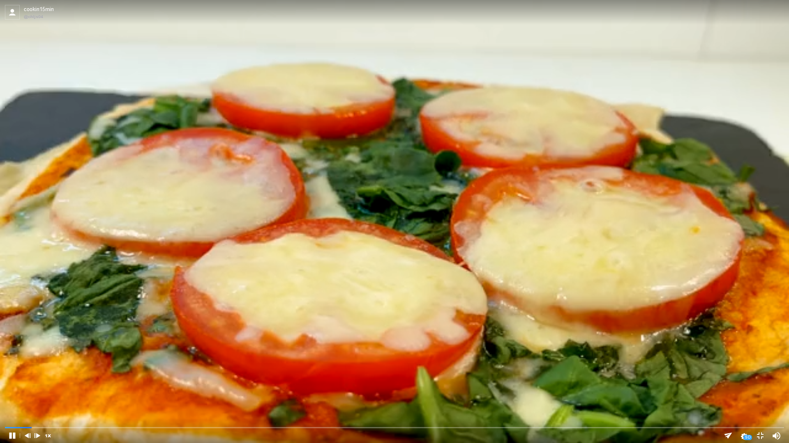

One Pan Tomato Egg Tortilla

This recipe was posted in the Gif Recipes subreddit. It is a One Pan tortilla with various delicious ingredients in one plate,
great for breakfast and children's snacks. You can enjoy a different kind of fun at home with just one pan.
Ingredients:
- 1 onion
- 150g cheese
- 1 tomato
- 4 eggs
- 2 sheets mozzarela cheese
- 70g mozzarella cheese
- 70g spinach
- Salt, pepper, tomato sauce as you may want.
Steps:
- Cut an onion into tiny slices.
- Oil the pan and add sliced onions.
- Add a pinch of salt and pepper and stir-fry the onions until golden brown.
- Lay out a sheet of tortilla without oil in the pan.
- Put 4 eggs on top and add salt and peppero on the yolk.
- Add the sauteed onion, chopped spinach and cheese and cover with a tortilla.
- Cover with a lid and cook on low heat for 5 minutes.
- When one side is crispy, flip and spread tomato sauce on top.
- Top it off with chopped spinach, sliced tomatoes and mozzarella cheese.
- Cover and cook over low heat until cheese melts.